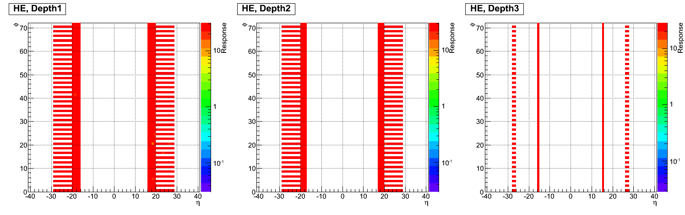
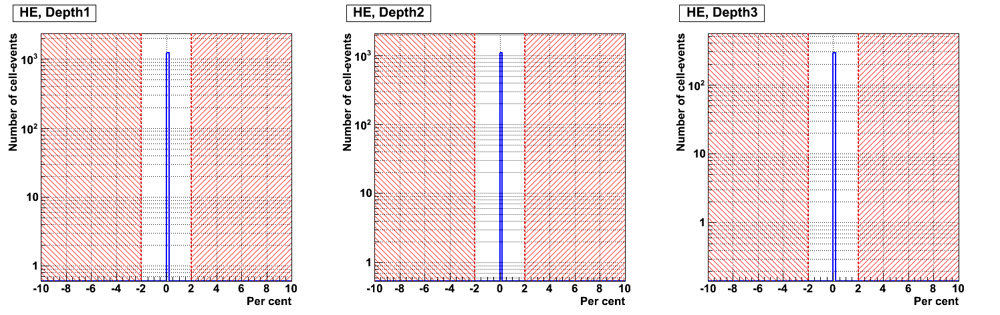
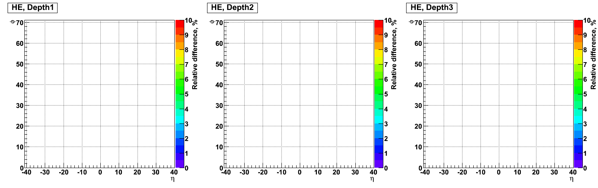

Response drift for HE: Current RUN = 225529, Reference RUN = 225529
1. Gain Stability (GS)
1.A. Averaged channel response, collected over all TS, for Current run in each channel for each depth.
Channel legend: colour means cooresponding value of mean response.

1.B. Averaged channel response, collected over all TS, for Reference run in each channel for each depth.
Channel legend: colour means cooresponding value of mean response.

1.C. Relative difference between Current run and Current run distribution over all events, channels for each depth.
Legend: Bins less -2% and more +2% correpond to bad relative difference position

1.D. Rate of bad relative difference (<-2, >+2) in each channel for each depth.
Channel legend: white - good, other colour - bad.
